An opinionated ggplot2 theme based on ggplot2::theme_minimal().
Viridis Quo!
Usage
theme_quo(
major = TRUE,
major.x = TRUE,
major.y = TRUE,
minor = TRUE,
minor.x = TRUE,
minor.y = TRUE,
x = TRUE,
y = TRUE
)Arguments
- major, major.x, major.y, minor, minor.x, minor.y, x, y
set to FALSE to disable grid lines by setting the appropriate panel.grid element to
ggplot2::element_blank().
Details
Quo requires Lato, which can be installed on macOS using
brew install font-lato.
Quo is designed to be paired with the viridis color scale, added by calling one of the continuous (c) or discrete (d) viridis color scales:
Examples
# adapted from ggplot2::theme_minimal()
library(ggplot2)
library(showtext)
font_add_google("Lato", "Lato")
showtext_auto()
# workaround for https://github.com/yixuan/showtext/issues/51
showtext_opts(dpi = 192)
ggplot(mtcars, aes(x = wt, y = mpg, color = factor(cyl))) +
geom_point() +
labs(
title = "Fuel economy declines as weight increases",
subtitle = "(1973-74)",
caption = "Data from the 1974 Motor Trend US magazine.",
tag = "Figure 1",
x = "Weight (1000 lbs)",
y = "Fuel economy (mpg)",
color = "Gears"
) +
theme_quo() +
scale_color_viridis_d()
